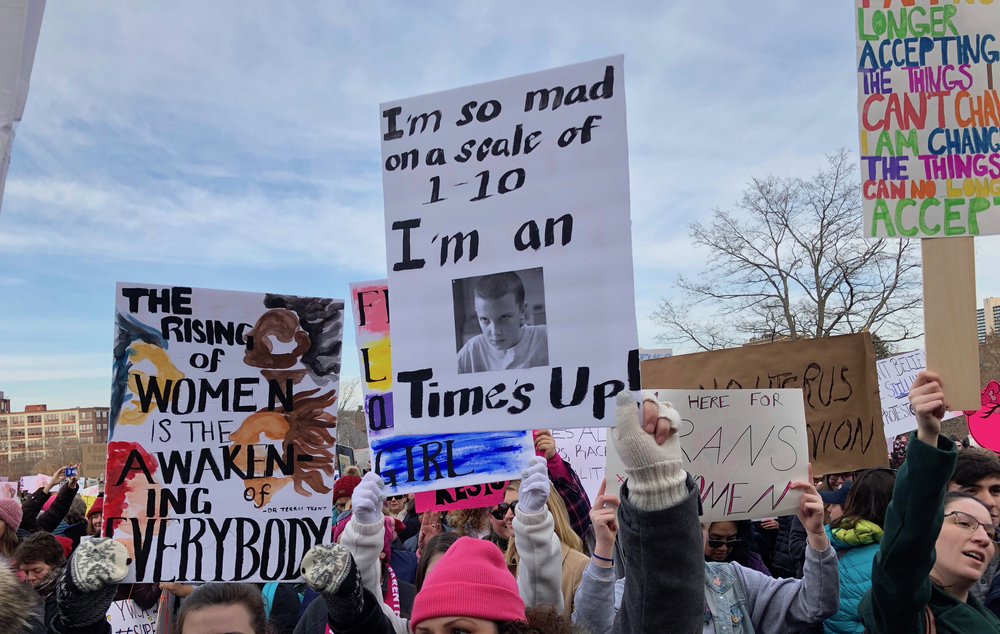

The #MeToo artist/nonprofit partnerships made social media impact but did it help survivors?
Jacqueline Prager Devine
Storrs, CT
Singer/songwriter FLETCHER released the song “I Believe You” on March 9, 2018. In a letter quoted in a Billboard article, FLETCHER wrote:
“This song is for all of the amazing women I work with every day who have been felt up, shut up and kicked down. And for all the women whose stories I haven’t heard, this song was made to let them know that I’m listening, we all are.”
She donated the proceeds of the song to the Time’s Up Legal Defense Fund, a nonprofit launched in the wake of the #MeToo movement.
“Time’s up for the sexual violence and the silence that surrounds it. Time’s up for gender inequality. [...] The proceeds of this song will be donated to Time’s Up legal defense fund for Women’s History Month,” she said.
FLETCHER’s used her art and celebrity to stand solidarity with victims of sexual abuse and donated to an organization that supports that cause. But how did the partnership happen? Where did it start? How do the right organizations partner with the right creators? Who orchestrates those deals?
Five months earlier, on October 15, 2017, actress Alyssa Milano sent out a tweet as a call to action for those who had been sexually harassed or assaulted in their lifetime. The viral response to two words launched the rebirth of the movement against sexual misconduct and assault.

“Me Too”, and its now ubiquitous hashtag #metoo, was echoed across social media platforms, news outlets and households across America, sparking a long-overdue, and at times, painful, conversation among men and women.
The movement was solidified by the creation of various forms of art: namely, music. Songs like “I Believe You” by FLETCHER and “Praying” by Kesha made headlines as anthems for those who had been affected by sexual violence. But these songs did not stand alone in their space; the artists promoting this music used their reach to create more social change by partnering with nonprofit groups associated with the movement.
FLETCHER partnered with nonprofits like “Time’s Up” and “It’s On Us” and donated the proceeds from the song and associated merchandise to the organizations. And Kesha partnered with “RAINN” while promoting “Praying.”
This in-depth story will unpack these partnerships, how they formed and how the movement affected the listeners – in positive and, as it turns out, negative ways. What’s known as the “me too.” movement started in 2006 when activist Tarana Burke first coined the phrase. Burke wrote on the “me too.” website that the movement began from the deepest, darkest place in her soul.
“As a youth worker, dealing predominately with Black children and children of color, I had seen and heard my share of heartbreaking stories,” she wrote on the “me too.” movement website. While working at a youth summer camp, she met a young girl named Heaven who revealed privately that she was being molested by her stepfather.
“I listened until I literally could not take it anymore-/which turned out to be less than 5 minutes. Then, right in the middle of her sharing her pain with me, I cut her off and immediately directed her to another female counselor who could ‘help her better.’”
Burke wrote that though she loved Heaven, she could not find it in herself to reveal that she, too, had experienced a similar pain.
“As much as I loved her, I could not muster the energy to tell her that I understood, that I connected, that I could feel her pain,” she wrote. “I watched her put her mask back on and go back into the world like she was all alone and I couldn’t even bring myself to whisper…me too.”
In the years that have followed Burke’s activism, she has worked to, “[...] help survivors of sexual violence, particularly Black women and girls, and other young women of color from low wealth communities, find pathways to healing.”
This local, grassroots work Burke had spent 11 years building changed suddenly when the tweet from Milano sparked almost 1 million tweets in 48 hours.
The country woke up to headlines of celebrities declaring “me too.” across all forms of social media. Household names like Gabrielle Union, Salma Hayek, America Ferrera and Reese Witherspoon were among the many that spoke up in support of the rising movement against sexual misconduct and assault.
Shortly thereafter, the organization “Time’s Up” was launched in order to stand in solidarity with victims of abuse across the country and all industries. In a letter signed by over 300 women in the film industry.
“Now, unlike ever before, our access to the media and to important decision makers has the potential of leading to real accountability and consequences. We want all survivors of sexual harassment, everywhere, to be heard, to be believed, and to know that accountability is possible,” the letter said.
Many of those who signed the document posted the letter on their social media accounts, flooding the internet with messages of solidarity. In the following months, entertainers continued to create content that was centered around the movement.
So, when artists began to speak out, in some cases, their work began to reflect the position they had taken. FLETCHER’s “I Believe You” had almost 1,300 mentions on social media during the week it was released and over the following three months, her single got at least 3,700 mentions with at least 8,200 engagements.
Definitions from “impression” and “reach” are courtesy of Social Sprout.
By partnering with “Time’s Up,” FLETCHER chose to align her art alongside activism.
Another popular example came from singer/songwriter Kesha. Her single “Praying” spent 21 weeks on the Billboard Hot 100 chart and made waves due to its ties to the allegations she brought against producer Lukasz Sebastian Gottwald or, Dr. Luke, in 2014. Kesha filed a civil suit claiming infliction of emotional distress, gender-based hate crimes and employment discrimination.
An article written by Kory Grow from Rolling Stone detailed the allegations.
“Kesha has filed a lawsuit against producer Dr. Luke, claiming he “sexually, physically, verbally and emotionally abused” her over the past decade that has “put her life at risk,” according to the suit. The suit says that Luke, whose real name is Lukasz Gottwald, began making sexual advances toward her from the time she signed with him at age 18 and that he allegedly forced her to imbibe drugs and alcohol to lower her inhibitions.
Although “Praying” was released just 3 months before the #MeToo wave, Kesha used her platform to partner with the organizations RAINN (Rape, Abuse & Incest National Network). Through a partnership with PLUS1, a portion of the proceeds from her then-tour would be donated to RAINN.
These examples, from FLETCHER and Kesha, are just two of the many partnerships that came together during the wake of #MeToo. And while there is a human side of us that believes these celebrities are partnering purely out of the goodness of their heart, there may also be self-interest at play.
BEHIND THE SCENES
Megan Sykes is a music brand partnerships agent at Creative Artists Agency (CAA)’s Nashville office. CAA is a leading entertainment and sports agency. Part of Sykes job is to “find brand partners for our artists,” she said. These partnerships can come in a number of different ways but the first step is getting to know the artists. Sykes, who started working at the agency in 2008, said that while some artists are specific about the brands/non-profits with which they’d like to partner, others just want partners. This means cold-calling, pitching deals and traveling. As a agent since 2013, Sykes manages these partnerships from start to finish.
Sykes works across the entire CAA roster, working on partnership deals as low as $5,000 and upwards into 7-figures. Sykes said nonprofit organizations have a media budget and, in some cases, partnering with an artist can help to amplify their message.

Michael Skolnik is the co-founder of The Soze Agency in Brooklyn, New York. He has been working in partnerships for the duration of his career.
“My entire career has been working with influencers on campaigns,” he said.
Skolnik reiterated that most nonprofits have money to spend in order to spread their message. “Bigger nonprofits are paying 6-figures, 7-figures for some bigger campaigns,” he said. “Smaller ones, five thousand dollars, 10 thousand dollars [...] but big ones, you know, 15k a month, 25k a month, 50k a month.”
And as much as we, the public, want to believe that these influencers are taking a stand on their own terms, Skolnik said “it’s all doctored” and “nothing is a fluke.”
Partnerships can materialize in a number of different ways, according to Sykes. Sometimes a brand reaches out to an artist or CAA in search for a partner, but she said it’s more likely that the artist comes forward with an idea and with whom they would like partner.
It starts by, “sitting down with the client and getting to know who they are when they’re not on stage or not writing,” Sykes said.
And when it comes to taking a stand on highly charged emotional or political issues such as sexual misconduct and assault, sometimes artists can be hesitant to make waves. When asked if artists ever get scared to get involved with a social activism campaign, Skolnik replied “all the time.”
“It’s very important when you are working with influencers and artists that you’re not like ‘you should be doing more, what’s wrong with you, you’re not loud enough,’” Skolnik said. “Some are new, newly famous, scared [...] you gotta hold their hand.”
And at The Soze Agency, these influencers are not paid to promote the social impact campaigns they are working on. Part of this is due to Skolnik’s connections in the music industry–having worked as the President and Editor-In-Chief at Global Grind, viral news platform, for almost seven years.
“We don’t pay any of our celebrities or influencers. We don’t have those transactional relationships; these are friends, you call them up and say ‘what can we do together?’,” he explained.
Skolink said some agencies pay celebrities or influencers to promote a campaign, but for him it’s more about building meaningful relationships with these people than making money.
“I’ve been doing this a long time, you build relationships and [the influencers] know that if we are coming to them with something, we are coming from a place of love,” he said. “I have a lot of relationships so [...] we didn’t really go to agencies for talent.”
WHY PARTNER?
Nonprofit organizations partner with artists to amplify their message, Sykes said. The organizations hope for more exposure and to reach an audience that it would not be able to reach on its own.
Sykes also said that when artists advocate for issues like sexual assault, partnering with a legitimate advocacy organization makes it all more credible.
“Adding something like a Time’s Up makes it more credible and makes the message [...] larger,” she said.
Artists can use their social media channels to show fans what they are passionate about, Sykes said.
“Social media documents every aspect of someone’s life,” Sykes said. “They want to show their fans more sides of them.”
When it comes to non-profits, Sykes said that artists want to be more than someone just promoting a brand. “Fans can sense when someone is being paid to promote something and just push something,” she said.
CAA also allows artists to create their own nonprofits through the CAA Foundation based out of the LA office. The difference between the partnerships born out of the foundation and those that are formed between the artist and brand is that the CAA Foundation partnerships do not bring in revenue for the company. But, Sykes said, the foundation is not meant to bring in revenue and when an opportunity presents itself to the agency that is unpaid, it goes directly to the foundation.
Time’s Up was developed by CAA clients. Reese Witherspoon, Nicole Kidman, entertainment lawyers in Los Angeles and many others booked a conference room at CAA and sat there all day to develop the organization, Sykes said.
“Reese reached out to CAA and wanted to do something,” Sykes said.
And while the organization has made a name for itself over the least year, it still needs $30 million to do everything they need, Sykes said.
ARE THESE PARTNERSHIPS EFFECTIVE?
Singer/songwriter Jessica Lá Rel contributed to the “me too.” movement’s website’s blog in October of 2018, roughly one year after actress Alyssa Milano’s tweet. Lá Rel’s article not only explores the ways in which artists can use their craft to cope with pain as a result of sexual abuse, but also serves as a cautionary tale for those who haven’t fully processed their trauma.
The song often referenced in the piece, “After War,” was written during her final year at Stanford after coming back from a semester abroad.
“While I was abroad I ended up in an unfortunate series of events and dealt with my first experience with sexual assault,” she said.
When she returned to campus, she began to contemplate what these events meant to her, and how they impacted her life.
“I was trying to navigate life and what it mean to have all these experiences,” she said. “[I was] in the process of trying to work through what was going through my mind and in my heart.”
Lá Rel then turned to songwriting as a means of coping with the experience.
“I wanted to do something that felt mutually beneficial,” she said. “I wanted to write something that allowed me to pin hope into my own heart.”
Lá Rel collaborated with the founder of the Me Too Movement, Tarana Burke, to relaunch the online platform, metoomvmt.com. The site serves as a place to host resources, advocacy opportunities and news about the movement.
“[I was] working with publicist who was also Tarana’s publicist,” she said. “I had already talked to her about my desire to continue the work for advocating for survivors.”
Lá Rel’s publicist told her that Burke was getting ready to launch the platform and that the team wanted to put together toolkits and make the site a place for both survivors and advocates.
When it comes to partnerships that occur between artists and nonprofits, Lá Rel said she can be skeptical about the relationship.
“There are a lot of different angles to it,” she said. “I myself have been very wary of mainstream icons who have partnered with organizations.”
Lá Rel said that right now, it’s trendy to be political and to independent artists it can feel like a slap in the face. She said that the partnerships can feel more “clickbaity” if you consider the rest of the artist’s career.
“For me, I’m a bit wary, as a result of that, of putting a lot of investment in partnering with an organization because I recognize there’s lots of reasons to hesitate, from an organizational standpoint, to invest in an artist they don’t know,” she said.
Lá Rel said that partnerships can have gains and losses on both ends. There’s a certain degree of benefit of partnering with high-profile artists because their work is put on a national scale, she said.
“Organizations can be skeptical of artists they don’t know,” she said. “They are more open to taking a risk with a high-profile artist.” When it comes to emerging artists or lesser known artists, Lá Rel said the benefits to the partnerships can feel one-sided because you have to wonder what the organization gets in return?
For big partnerships with more well-known organizations and artists, Lá Rel suggests asking “What is the nature of the partnership?” Is the artist getting involved in raising money, creating content for the nonprofit or is the artist just “in name” and the partnership does not go deeper than a surface endorsement?
Screenshots are from Swift's Instagram page and Zendaya's Twitter page.
Skolnik had a different take; that recent influencer campaigns have been effective. He made note of Taylor Swift’s partnership with Vote.org.
“[...] she got hundreds of thousands of kids to sign up and vote,” he said.
Skolnik said he asked actress Zendaya to also put on her Instagram a message to register to vote. “She did it, she got 40,000 people to sign up to vote.”
But Skolnik said that reach is hard. “ [...] there’s no distribution network for it unless a celebrity has their own.” This, then, supports Lá Rel’s argument; that non-profits wouldn’t want to work with smaller artists.
Tarana Burke, founder of the “me too.” movement, said that when it comes to partnering with influencers, or celebrities, it can be helpful but we should also be careful.
Jacqueline Prager Devine: “I wanted to talk to you about, or I guess ask you about, the influencer surge that happened since “me too.” exploded on social media and how you feel about influencers who have partnered with nonprofits in support of the movement”
Tarana Burke: “Are you using the word ‘influencers’ like ‘celebrities’?”
JPD: “Yeah!”
TB: “Oh, ok.”
JPD: “But I study singers specifically; so people like Kesha, Lady Gaga, and I actually spoke with Jessica Là Rel who wrote a piece for the ‘me too.’ movement website.” [...] “So I just was curious about your opinion about the partnerships that exist between celebrities and nonprofits to support the movement.”
TB: “I like it, I think it’s helpful. One, because of the way ‘me too.’ started with this Hollywood thing, with Weinstein, it involved so many high profile people, or influencers, or what have you, so it feels somewhat connected to this.
“I talked before about, when I first started ‘me too.’ because I worked around black and brown girls I was trying to connect with black women celebrities who had come out and talked about experiencing sexual violence. And I wrote letters to Gabrielle Union and Mary J. Blige, Queen Latifah, Missy (sydney) Elliot… nobody wrote me back [...].
“And the reason that I did that was because in the work we were doing, in our workshops, I used their stories and it was always the moment that most resolated with our students. As much as I criticize ‘celebrity’ -- I see it both ways.
“I also understand its usefulness […]. I think there’s a fine line between using influencers or celebrities to amplify an issue and looking to them for the answers around that issue. We have to be careful about not crossing that line because we get these weird messages.
“The other thing about people who are influential is that we assign them a level of intelligence [...] wisdom.
“Why do we ask these people who, this is not their work? I think it is useful but I think we have to be careful.”
JPD: “Thank you so much.”
TB: “You’re welcome.”
The above interview was from a Q&A session at the Jorgensen Center for the Performing Arts at the University of Connecticut on April 10, 2019.
Lá Rel said that her music is “so much so about pushing the needle forward.” Speaking up about injustice is built into her work. Since she has always gravitated toward artists who didn’t brand themselves as an activist but their art alone was active, she wanted her music to serve a similar purpose.
“It’s all about [...] thinking about matters of life, love and justice,” she said.
Skolnik said artists are always a part of social movements.
“Artists are always the first ones to challenge the world, this is no innovation,” he said. “There has always been integration of art and social justice or art and activism.”
Throughout our interview, Skolnik often referenced one of Harry Belafonte’s famous quotes: “When the movement is strong, the music is strong.”
Skolnik said that he believes if you fund the movement, then the art will be a reflection of that movement.
“Right now the movement is strong,” he said. “ [...] the music is strong, and that’s why you have great art being made right now; it’s a reflection.”
Skolnik also made mention of historically political voices in the music industry such as Nina Simone, Billie Holiday, Joan Baez, Joni Mitchell, Janis Joplin and Beyoncé.
THE LIMITS OF HASHTAG ACTIVISM
The above interactive map was a part of the "Me Too Rising" project from Google Trends
Lá Rel believes that when it comes to social media’s part in the “me too.” movement it is a blessing and a curse.
“The beauty of it is that things have the ability to catch fire,” she said. “Just as quickly… it can be put our or fizzle.”
She said that often times, social media has the power to do more than historical channels but the challenge begins when you start to consider what percentage of people find justice through social media.
“If the goal is more so to spread awareness, is that measurable?” she asked. “People’s experiences then have the capability to feel truncated to posts of photographs.”
Sometimes, she said, people find solidarity in that but sometimes it can make people feel lost.
What can happen then, she said, is that “there’s this threat to those who don’t have something to immediately packaged to say [...] if something happened and you didn’t respond on social media, it was almost as if you had turned your back.”
Lá Rel said that the “call-out” culture does not let people process internally in ways that go beyond social media. “We have put so much stock in our virtual process that it has begated every aspect of who we are.”
Lá Rel, who is a program manager at Stanford University in the African and African-American Studies program, said that while this movement provided a great space for “blooming advocates,” she witnessed the movement retraumatize victims of sexual abuse. She said that when Burke launched the “me too.” movement, she was not trying to incite everyone to resurface explicit details again and again.
Of those that were active in the recent movement, Lá Rel said that those who had been recently traumatized by sexual abuse were the most involved and those who had been traumatized some time ago were less likely to get involved.
“Some wanted to lead the charge but some felt like it was bringing back incredible hurt for them,” she said. “For those who had long standing histories it seemed to be very difficult.”
Aida Manduley, a therapist in Boston, echoed this sentiment and said in a 2017 CNN article that some of their clients feel the pain has become inescapable.
“I am concerned with the victims of sexual trauma and violence who are saying to me 'I can't get away from the trigger, it's everywhere,'" they said. "It leaves that person very exposed and vulnerable, especially if friends or loved ones don't respond or respond unfavorably, such as questioning if the abuse was real."
Clinical psychologist and trauma specialist Linda Curran was quoted in the same article saying that sharing your story isn’t always heroic and can be retraumatizing. "Making your history public should only be done when you feel resourced enough to tolerate the effects of the disclosure," she said.
Manduley suggested that if individuals want to join the movement without oversharing, there are several ways to get involved.
Image by Jacqueline Prager Devine // Women's March 2018: Hartford, CT
"The first level might be witnessing, such as liking posts," they said, "and then signal boosting, such as re-sharing articles and comments.
"A step above that might be to like and share with some commentary [...] and a step above that might be to give a bit more personal information, even if it's just #MeToo."
Another part of this conversation is what often gets lost in the media; the “me too.” movement isn’t new and that experiences of women of color have been brushed aside by the stories of white women.
“Press has a lot to do with this,” Lá Rel said. “The way that the movement was marketed, to some extent it felt like erasure, but in some ways it felt like neglent”
Lá Rel said it felt like a tell tale sign of how things could go. Some think that this “erasure” is deliberate and that it’s part of a larger issue.
“[There] isn’t as much historical knowledge of what has been done,” Lá Rel said. “Tarana has been doing the work for such a long time [there is a] moment of deja vu and relevance of black women.”
Because of this, Lá Rel said that women of color have questioned their involvement and walked away from marches because it is emotion labor to have to explain constantly why this work is relevant and “constantly justify [your] presence.”
Lá Rel said “you are not obligated to do that work or educate other people on why your humanity is justified.”